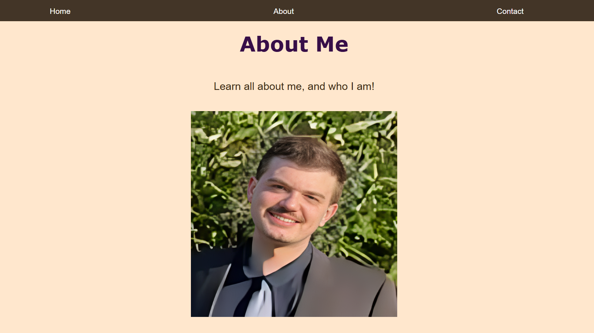
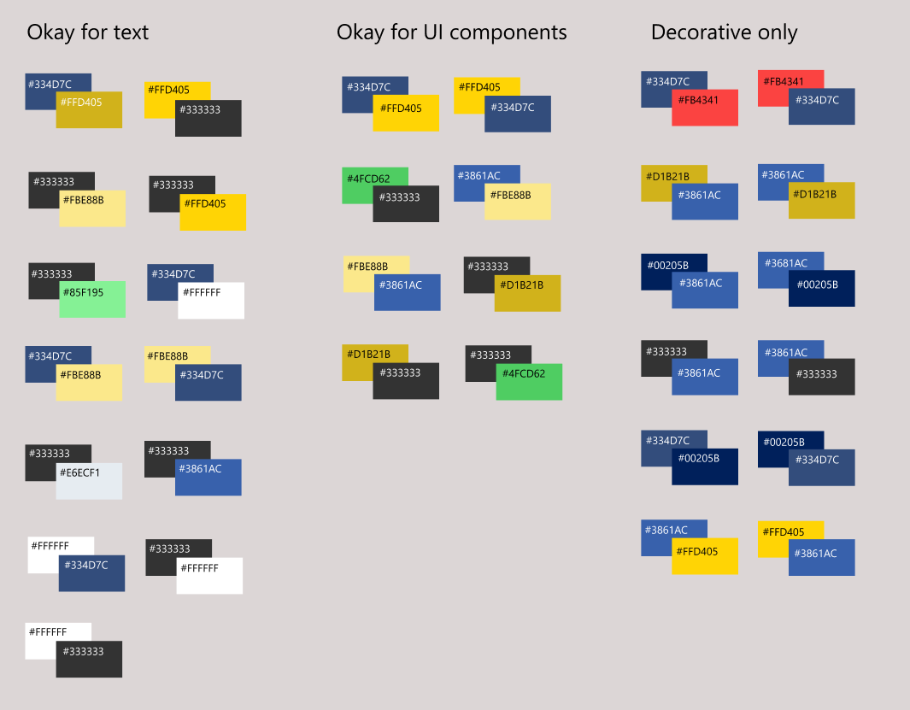
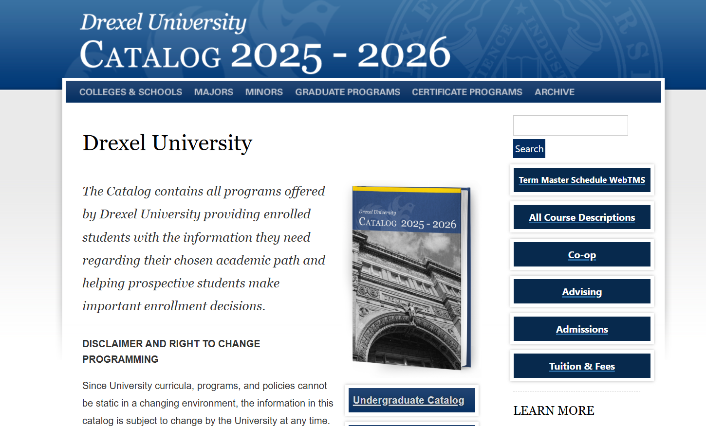
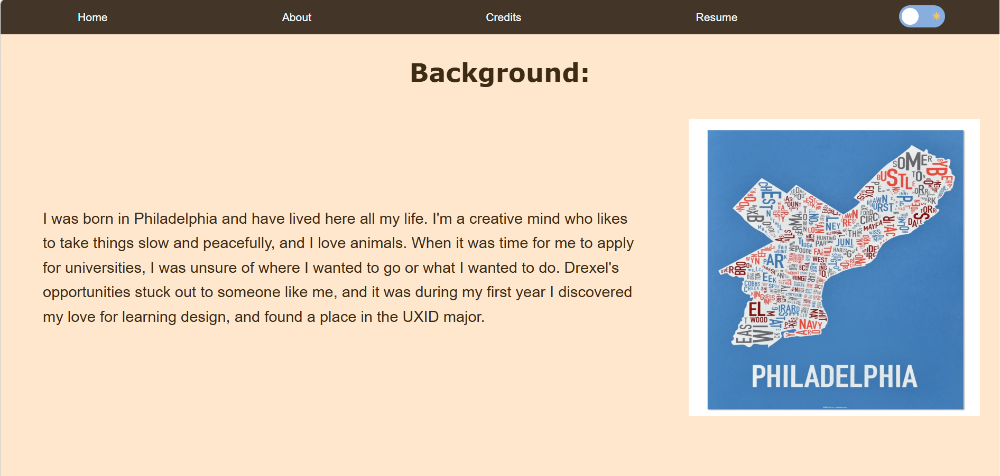
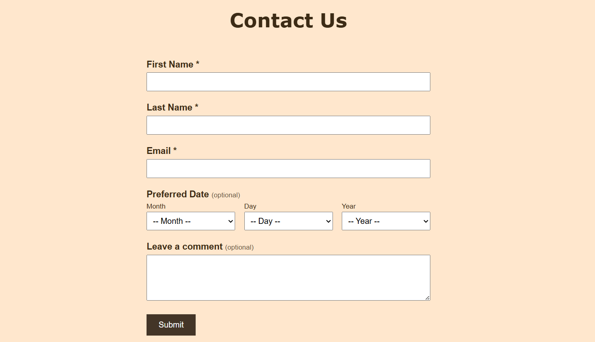
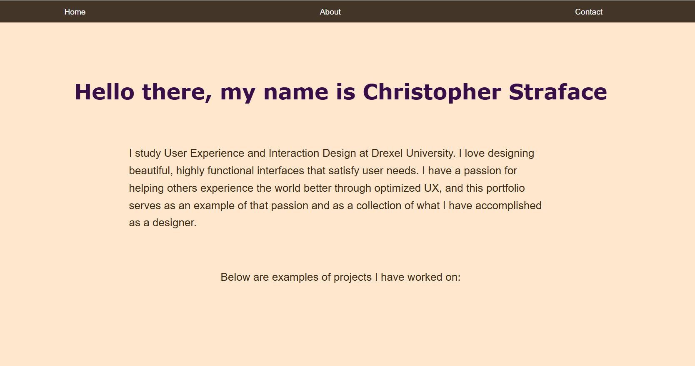
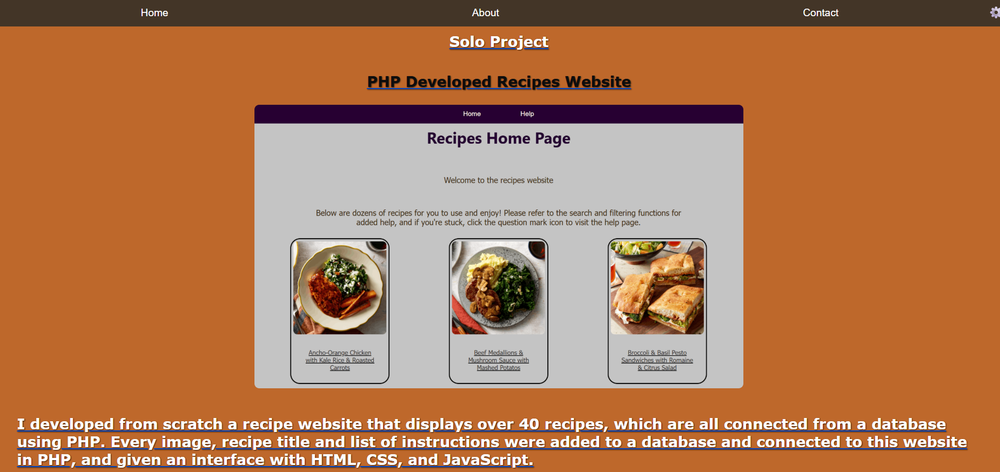

For this project, I was tasked with remaking three full pages from a website of my choice to make it optimized for accessibility. This included redoing the CSS, including ARIA labels and HTML semantic tags, and ensuring the site is fully navigable through keyboard commands and a voiceover program. I chose to redo my personal portfolio website, and I remade the home and about pages. The “contact” page was a new creation, so I could incorporate an accessible form, which was a necessary component for this project.
By the end of the allotted time for this project, I needed at least three full pages for my website of choice to be remade and optimized. I chose to redo my own personal website to simultaneously improve its user experience greatly while fulfilling the criteria for this project.
This project was broken up into steps, meaning that I had to deliver the content slowly over the allotted 10 weeks. I had to stay up to date with my content every week to make sure I was developing the pages properly, keeping up with constant feedback, and implementing new content while improving on older additions to fully optimize the experience and accessibility.
The goal was to remake and improve upon our chosen website, and develop a minimum of three optimized pages: A home/index page, a contact page, and a third relevant page of choice. Each page needed to be optimized for accessibility and improve on the old experience, becoming a more professionally developed site with improved accessibility to reach more users. Besides changing the visuals, such as color and text, I also needed to change the internal tagging and formatting of every object to be optimized for screen readers and keyboard navigation.
First, I needed to find a website to work with. At first, I started with PetCo’s website, specifically their home page. This became a mistake later, but at the time, this was what I was working with. At first, I needed to create two color palettes based on our chosen site: A palette of the existing colors, and then an accessible color palette of combinations that pass the modern standards of color visibility.

After that was completed, I pivoted again to a new site once we moved onto the next assignment, which was to start remaking the CSS of our chosen page. I struggled to copy the HTML code from PetCo’s site, so I switched to the Drexel Catalog website. This also became a mistake, as I attempted to remake the CSS in a new accessible lens, I realized this site would still be too complicated for me to finish.

Following this, I decided to course-correct and start over with my personal portfolio website. I was behind, having to redo my old assignment with this new site, but my portfolio was a less complicated website to recreate, so it took less time. So I quickly bounced back and remade my About page to include optimized CSS.

Next, after catching up, I needed to optimize the HTML. This included replacing the old tags with specific semantic ones, and adding ARIA labels and tab indexes where appropriate. Then, I tested the functionality by navigating through this build of my site with only keyboard commands and listening to a screen reader program (in my case, NVDA) to test that the site can be read correctly.
Once that was finished, I needed to transition to creating the next required page, that being a contact page with a contact form. I already had my CSS and HTML optimized, so I only had to rework my HTML on this page to include the contact form and re-add the appropriate tags and labels. The form itself incorporates more JavaScript to handle error checking, which has unique colors and symbols to remain accessible.

Lastly, I remade the home page to complete the requirements for the project. I redid two of my project cards to fit better within the style of my project, and optimized the content within. I also did major bug fixes and quality updates, such as improving my navigation and improving the appearance of my unique site features, such as my light and dark mode toggle button.


Once the home page was complete, I had met all the designated requirements for the project, and had fully designed and implemented three remade pages to be optimized for accessibility. I was also able to incorporate other aspects for improvement, such as native system light and dark mode compatibility, redoing my navigation, and remaking pre-existing site features, such as my dark mode toggle button, to be properly optimized and made more accessible. And the full site is also responsive, and can be fully viewed and experienced on mobile devices. The link to the final site can be found here.
With my final build, I have met the project goals and requirements, featuring three pages remade from a chosen website that are optimized for accessibility. Including full responsiveness, this website is now fully accessible in any viewing size, opening the usability for many more users than before this project’s changes.